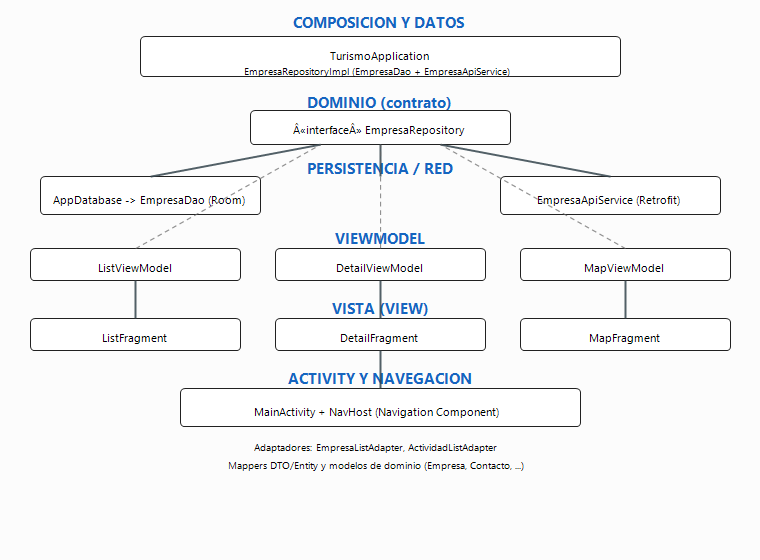

Autoría / asignatura: (completar)
Fecha: (completar)
La aplicación sigue el patrón MVVM (Model–View–ViewModel) recomendado por Android:
las pantallas (View) son Fragment y Activity con layouts y enlaces de datos;
la lógica de presentación y el estado observable residen en ViewModel;
el acceso a datos y reglas de persistencia/sincronización se concentran en un repositorio
que implementa un contrato del dominio. Así se desacopla la interfaz de los detalles de Room, Retrofit y preferencias.
ui): MainActivity, fragmentos de lista, detalle y mapa,
adaptadores de RecyclerView, factorías de ViewModel y tema Compose auxiliar.domain): modelos de negocio (Empresa, contacto, coordenadas, etc.)
e interfaz EmpresaRepository que define lo que la UI necesita del catálogo.data): implementación del repositorio, API Retrofit, DTOs y mapeo a dominio,
Room (AppDatabase, EmpresaDao, EmpresaEntity, convertidores) y preferencias (DataStore / locales).TurismoApplication): composición ligera del grafo de dependencias (base de datos, API, repositorio)
hasta disponer de un contenedor DI dedicado.util): p. ej. cálculo de distancias para ordenación por proximidad.
Al iniciar el listado, el ListViewModel puede disparar una sincronización remota; el repositorio descarga el JSON,
lo convierte a entidades Room y las inserta. La UI observa Flow/StateFlow expuestos por el repositorio o el ViewModel,
de modo que los cambios en la base de datos se reflejan automáticamente en la lista. El detalle resuelve una empresa por id (argumentos de navegación);
el mapa consume el mismo catálogo observable y delega la interacción con Google Maps en el fragmento correspondiente.
El diagrama siguiente es una imagen PNG (no SVG): Microsoft Word al abrir HTML suele mostrar el código del SVG como texto en lugar del dibujo. Con PNG el esquema se incrusta como figura normal al guardar en .docx.

Esta estructura facilita pruebas (repositorio mockeable en unit tests), mantenimiento por responsabilidad única y evolución futura (p. ej. inyección de dependencias con Hilt o Koin) sin reescribir la lógica de pantalla.
arquitectura_diagrama.png en la misma carpeta (docs/).
En Word: Archivo → Abrir este HTML; debería verse el dibujo. Luego Archivo → Guardar como → Documento de Word (.docx).
Si la imagen no aparece, use Insertar → Imágenes y elija arquitectura_diagrama.png manualmente.
Para volver a generar el dibujo: en PowerShell, .\docs\generate_arquitectura_diagram.ps1.
Arquitectura_MVVM_Empresas_Turismo_Activo.html, puede cerrarlo y renombrar este archivo o copiar el contenido.)